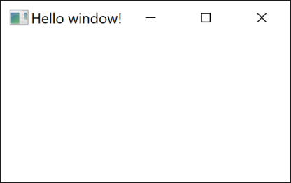
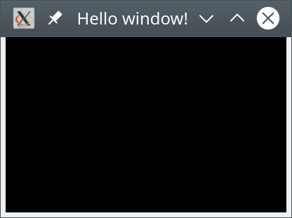

<h1>Vulkan: Vytvoření okna (9. díl)</h1>

<p>V letošní prázdninové sérii o Vulkan si ukážeme, jak otevřít okno
a jak do něj rendrovat. Naším cílem budou primárně platformy
Win32, Xlib a Wayland. V dalších dílech si ale ukážeme i
<a href="https://www.qt.io/">Qt</a> a <a href="https://www.libsdl.org/">SDL</a>.
Dnes začneme otevřením okna a vytvořením surface.</p>

<p>Zdrojáky si můžeme <a href="">stáhnout</a>.
Pro zkompilování na Win32 nepotřebujeme nic instalovat.
Pro platformu Xlib a Wayland můžeme ale potřebovat vývojové balíčky, tedy pokud je již nemáme nainstalované.
Na Ubuntu jsou to obyčejně libx11-dev pro Xlib a libwayland-dev a wayland-protocols pro Wayland.</p>

<p>Ve zdrojácích máme tři cpp soubory, každý pro jednu platformu.
Začneme od Win32, ať pak můžeme pokračovat knihovnou Xlib následovanou moderním Waylandem.<p>


<h3>Win32</h3>

<p>První verze <a href="https://en.wikipedia.org/wiki/Microsoft_Windows">Windows</a>
přišla na svět v roce 1985, ale až do Windows 3.11
se nejednalo o operační systém, ale spíše o grafickou nádstavbu
<a href="https://en.wikipedia.org/wiki/MS-DOS">MS-DOSu</a>.
Tyto starší Windows měly pouze 16-bitové rozhranní nazývané Win16.
Windows NT a následně Windows 95 přinesly Win32, tedy 32-bitové rozhranní.
Win64 je pak varianta pro 64-bitové systémy. Nicméně pokud náš kód nepoužívá
nějaké speciality a pointerová kouzla, měl by být přeložitelný jak pro Win32,
tak pro Win64. Budeme-li tedy hovořit o Win32 platformě,
budeme implicitně myslet i na Win64, která je ze stejného kódu kompilovatelná.<p>

<p>Jak tedy vytvořit okno pro Vulkan?
V prvé řadě potřebujeme mít okno kde uložit. A protože používáme výjimky,
nepoužijeme přímo HWND, což je ve Win32 typ pro handle okna,
ale zapouzdříme si jej do struktury UniqueWindow,
ve které implementujeme destruktor:</p>

<pre>
static struct UniqueWindow {
   HWND handle = nullptr;
   ~UniqueWindow()  { if(handle) DestroyWindow(handle); }
   operator HWND() const  { return handle; }
} window;
</pre>

<p>Vynecháme mazání copy konstruktorů a implementaci move konstruktorů,
a všeho dalšího, na co jsme u unique objektů zvyklí, neboť nevytváříme veřejné API.
To si necháme až na další díl tutoriálu.
Možná by se mě čtenáři v budoucnu zeptali, proč jsem nepoužil std::unique_resource.
Důvod je prostý: tato třída prozatím není ve standardu, ale těšme se na ni.</p>

<p>Další proměnné, které budeme potřebovat, jsou hInstance, windowClass a wndProcException:</p>

<pre>
static HINSTANCE hInstance = NULL;
static struct UniqueWindowClass {
	ATOM handle = 0;
	~UniqueWindowClass()  { if(handle) UnregisterClass(MAKEINTATOM(handle), hInstance); }
	operator ATOM() const  { return handle; }
} windowClass;
</pre>

<p>Proměnnou hInstance bude mimo jiné potřebovat při vytváření okna
a bude obsahovat handle spustitelného exe souboru.
Proměnná windowClass ponese třídu okna, přesněji řečeno win32 atom jednoznačně identifikující
třídu okna. Opět používáme strukturu s destruktorem, která se postará o zlikvidování
třídy okna ve chvíli, kdy už není potřeba.</p>

<p>Poslední dvě proměnné jsou wndProcException a surface:</p>

<pre>
static exception_ptr wndProcException = nullptr;

// Vulkan window surface
static vk::UniqueSurfaceKHR surface;
</pre>

<p>První z nich slouží na uložení výjimky vzniklé ve funkci obsluhy zpráv okna,
kde si k tomu také řekneme více. Druhá proměnná surface reprezentuje povrch okna,
do kterého budeme v dalších dílech rendrovat:</p>

<p>Nyní můžeme zaměřit naše úsilí na vytvoření okna. Začneme Vulkanní instancí:</p>

<pre>
// Vulkan instance
instance =
	vk::createInstanceUnique(
		vk::InstanceCreateInfo{
			vk::InstanceCreateFlags(),  // flags
			&amp;(const vk::ApplicationInfo&amp;)vk::ApplicationInfo{
				"09-helloWindow-Win32",  // application name
				VK_MAKE_VERSION(0,0,0),  // application version
				nullptr,                 // engine name
				VK_MAKE_VERSION(0,0,0),  // engine version
				VK_API_VERSION_1_0,      // api version
			},
			0, nullptr,  // no layers
			2,           // enabled extension count
			array&lt;const char*, 2&gt;{  // enabled extension names
				"VK_KHR_surface",
				"VK_KHR_win32_surface",
			}.data(),
		});
</pre>

<p>Kód je stejný, jako jsme zvyklí, až na jednu změnu: enabled extensions (česky: zapnutá rozšíření).
Abychom mohli rendrovat do okna, potřebujeme rozšírení VK_KHR_surface a VK_KHR_win32_surface.
První z nich řeší všeobecnou práci se surface (tedy s "povrchem" okna), druhá pak
všechno, co je specifické pro Win32.</p>

<p>Dále potřebujeme funkci pro zpracování zpráv zaslaných oknu:</p>

<pre>
// window's message handling procedure
auto wndProc = [](HWND hwnd, UINT msg, WPARAM wParam, LPARAM lParam) noexcept -&gt; LRESULT {
	switch(msg)
	{
		case WM_CLOSE:
			if(!DestroyWindow(hwnd))
				wndProcException = make_exception_ptr(runtime_error("DestroyWindow(): The function failed."));
			window.handle = nullptr;
			return 0;

		case WM_DESTROY:
			PostQuitMessage(0);
			return 0;

		default:
			return DefWindowProc(hwnd, msg, wParam, lParam);
	}
};
</pre>

<p>My se v tuto chvíli spokojíme pouze s ošetřením dvou zpráv: WM_CLOSE a WM_DESTROY.
A protože toto není tutoriál o Win32, najdou zájemci detaily opět například ve WinAPI dokumentaci
na stránkách Microsoftu. Zadáním WinAPI funkcí do googlu jsou mezi prvními odkazy právě tyto stránky.</p>

<p>Avšak poznámka k výjimkám: Z funkce pro obsluhu zpráv okna není rozumné vyhazovat výjimky.
Běh programu se vrací do systémových knihoven, které byly napsány v nespecifikovaném jazyce,
a je poněkud problematické hádat, co se tam stane s výjimkou. Proto funkci wndProc označíme jako noexcept.
Dále místo vyhození výjimek si ji jen vytvoříme a uložíme do proměnné wndProcException.
Uloženou výjimku pak znova vyhodíme v hlavní smyčce aplikace.
A až budeme v následujících dílech volat další funkce a metody z wndProc,
které samy mohou vyhazovat výjimky, uzavřeme je do try-catch bloku
a odchycenou výjimku opět uložíme do wndProcException.</p>

<p>V dalším kroku zaregistrujeme třídu okna. K tomu použijeme funkci RegisterClassEx()
a strukturu WNDCLASSEX, kterou inicializujeme mimo jiné i naší funkcí wndProc
pro zpracování zpráv zaslaných oknu:</p>

<pre>
// register window class
hInstance = GetModuleHandle(NULL);
windowClass.handle =
	RegisterClassEx(
		&amp;(const WNDCLASSEX&amp;)WNDCLASSEX{
			sizeof(WNDCLASSEX),  // cbSize
			0,                   // style
			wndProc,             // lpfnWndProc
			0,                   // cbClsExtra
			0,                   // cbWndExtra
			hInstance,           // hInstance
			LoadIcon(NULL, IDI_APPLICATION),  // hIcon
			LoadCursor(NULL, IDC_ARROW),  // hCursor
			NULL,                // hbrBackground
			NULL,                // lpszMenuName
			"HelloWindow",       // lpszClassName
			LoadIcon(NULL, IDI_APPLICATION)  // hIconSm
		}
	);
if(!windowClass.handle)
	throw runtime_error("Cannot register window class.");
</pre>

<p>A po registraci třídy okna už můžeme vytvořit samotné okno:</p>

<pre>
// create window
window.handle =
	CreateWindowEx(
		WS_EX_CLIENTEDGE,  // dwExStyle
		MAKEINTATOM(windowClass.handle),  // lpClassName
		"Hello window!",  // lpWindowName
		WS_OVERLAPPEDWINDOW,  // dwStyle
		CW_USEDEFAULT, CW_USEDEFAULT, 400, 300,  // X, Y, nWidth, nHeight
		NULL, NULL, hInstance, NULL  // hWndParent, hMenu, hInstance, lpParam
	);
if(window == NULL)
	throw runtime_error("Cannot create window.");
</pre>

<p>Pro detaily opět odkazuji na dokumentaci WinAPI. A máme-li okno, můžeme vytvořit surface:</p>

<pre>
// create surface
vk::UniqueSurfaceKHR surface =
	instance->createWin32SurfaceKHRUnique(
		vk::Win32SurfaceCreateInfoKHR(
			vk::Win32SurfaceCreateFlagsKHR(),  // flags
			wc.hInstance,  // hinstance
			window  // hwnd
		)
	);
</pre>

<p>Jak vidíme v kódu, pro vytvoření surface potřebujeme HINSTANCE okna a handle samotného okna.</p>

<p>Nyní máme okno a Vulkanní surface, na kterém máme úmysl zobrazovat,
či přesněji řečeno, prezentovat výsledek našeho renderingu.
Nicméně je zde drobný problém:
Ne každé fyzické zařízení musí nutně umět prezentovat na náš surface.
Například počítač se dvěma grafickými kartami nemusí podporovat
rendering na jedné kartě a prezentaci výsledků na obrazovku, která je připojena skrz druhou grafickou kartu.
A jsou dokonce fyzická zařízení, které nazýváme výpočetní akcelerátory,
a které neumějí prezentovat vůbec a ani nemají konektor pro připojení obrazovky.
Potřebujeme tedy zjistit, která fyzická zařízení jsou kompatibilní s naším surface.</p>

<pre>
// find compatible devices
vector&lt;vk::PhysicalDevice&gt; deviceList = instance->enumeratePhysicalDevices();
vector&lt;string&gt; compatibleDevices;
for(vk::PhysicalDevice pd : deviceList) {
   uint32_t c;
   pd.getQueueFamilyProperties(&amp;c, nullptr);
   for(uint32_t i=0; i&lt;c; i++)
      if(pd.getSurfaceSupportKHR(i, surface.get())) {
         compatibleDevices.push_back(pd.getProperties().deviceName);
         break;
      }
}
cout &lt;&lt; "Compatible devices:" &lt;&lt; endl;
for(string&amp; name : compatibleDevices)
   cout &lt;&lt; "   " &lt;&lt; name &lt;&lt; endl;
</pre>

<p>V kódu postupně procházíme všechna fyzická zařízení, dotazujeme se na počet tříd front,
a pak hledáme, zda je pro nějakou třídu front podporována prezentace na náš surface,
což zjišťujeme zavoláním metody getSurfaceSupportKHR().
A pokud je prezentace pro některou třídu front podporována, pak si fyzické zařízení uložíme
do seznamu. Tento seznam pak v zápětí vypíšeme do konzole.</p>

<p>A jsme téměř hotovi. Abychom dostali okno na obrazovku,
zbývá již pouze zavolat funkci ShowWindow() a rozjet smyčku zpráv:</p>

<pre>
// show window
ShowWindow(window, SW_SHOWDEFAULT);

// run event loop
MSG msg;
BOOL r;
while((r = GetMessage(&amp;msg, NULL, 0, 0)) != 0) {

	// handle GetMessage() errors
	if(r == -1)
		throw runtime_error("GetMessage(): The function failed.");

	// handle message
	TranslateMessage(&amp;msg);
	DispatchMessage(&amp;msg);

	// handle exceptions raised in window procedure
	if(wndProcException)
		rethrow_exception(wndProcException);
}
</pre>

<p>Smyčka zpráv vybírá zprávy z fronty funkcí GetMessage().
Samotná zpráva pak doručena oknu ve funkci DispatchMessage().
V okně je obsloužena ve funkci wndProc, kterou jsme si již popsali.
A pokud vznikla výjimka ve wndProc, budeme ji mít uloženu ve wndProcException.
V tom případě výjimku znova vyhodíme.</p>

<p>Aplikaci můžeme zkusit spustit a měli bychom vidět prázdné okno.</p>



<p>A co se stane, když se pokusíme okno zavřít?
Nejprve ve funkci zpráv okna dostaneme zprávu WM_CLOSE.
V ní smažeme okno, což způsobí zaslání zprávy WM_DESTROY.
Při obsluze WM_DESTROY zavoláme funkci PostQuitMessage(),
která způsobí ukončení smyčky zpráv, neboť GetMessage() vrátí nulu.
Aplikace pak opustí funkci main().
Destuktor UniqueWindow neudělá nic, neboť okno je již uvolněno.
Následuje destruktor UniqueWindowClass, který uvolní třídu okna.
Posledním objektem je vk::UniqueInstance, jehož destruktor uvolní instanci Vulkan.
Tím je aplikace korektně ukončena a my jsme hotovi s Win32 platformou pro tento díl tutoriálu.</p>

<p>Více pro tuto platformu příště. Nyní nás čeká vytvoření okna na Linuxu s využitím knihovny Xlib
a po ní moderní přístup Waylandu.</p>


<h3>Xlib</h3>

<p>Xlib knihovna přišla na svět někdy kolem roku 1985. Je tedy podobně stará, jako Windows.
Dnes, pokud ještě musíme používat X Window System, používáme obyčejně XCB rozhranní.
V každém případě, obojí je v čase psaní tohoto článku na ústupu a naděje se upírají k Waylandu.</p>

<p>Navzdory pomalému odchodu této platformy si ukážeme, jak vytvořit okno v Xlib ze třech důvodů:
Jednak Xlib zde s námi bylo opravdu hodně let a hned tak magicky nezmizí.
Programátoři rozsáhlých projektů mají mnohdy bolestnou zkušenost,
jak mnoho práce dá nahradit jednu knihovnu v projektu za jinou.
Některé knihovny jsou doslova "prorostlé" skrz projekt a mnohdy je to práce na roky.
Xlib tedy může přežít roky a roky v mnoha projektech.
Druhý důvod je v lepším pochopení Waylandu, můžeme-li jej porovnat s jeho předchůdcem.
A třetí: vytvoření okna s Xlib je podstatně jednodušší než s Wayland.
Projdeme si jej tedy před Waylandem.</p>

<p>Jak tedy vytvořit okno pro Vulkanní rendering v Xlib?
Opět potřebujeme v první řadě mít kam uložit handle okna
a dále i handle spojení na display server:</p>

<pre>
// Display and Window handle
static struct UniqueDisplay {
   Display* handle = nullptr;
   ~UniqueDisplay()  { if(handle) XCloseDisplay(handle); }
   operator Display*() const  { return handle; }
} display;
struct UniqueWindow {
   Window handle = 0;
   ~UniqueWindow()  { if(handle) XDestroyWindow(display, handle); }
   operator Window() const  { return handle; }
} window;
</pre>

<p>Náš kód opět začíná vytvořením vk::Instance:</p>

<pre>
// Vulkan instance
instance =
	vk::createInstanceUnique(
		vk::InstanceCreateInfo{
			vk::InstanceCreateFlags(),  // flags
			&amp;(const vk::ApplicationInfo&amp;)vk::ApplicationInfo{
				"09-helloWindow-Xlib",   // application name
				VK_MAKE_VERSION(0,0,0),  // application version
				nullptr,                 // engine name
				VK_MAKE_VERSION(0,0,0),  // engine version
				VK_API_VERSION_1_0,      // api version
			},
			0, nullptr,  // no layers
			2,           // enabled extension count
			array&lt;const char*, 2&gt;{  // enabled extension names
				"VK_KHR_surface",
				"VK_KHR_xlib_surface",
			}.data(),
		});
</pre>

<p>Kód je opět stejný jako jsme zvyklí kromě toho,
že zde žádáme o povolení extensions VK_KHR_surface a VK_KHR_xlib_surface.
Oproti Windows je tedy VK_KHR_win32_surface nahrazena VK_KHR_xlib_surface.
Tak budeme moci používat Xlib s Vulkanním surface dohromady.</p>

<p>Dalším krokem je otevření X spojení, přes které budeme komunikovat s X serverem:</p>

<pre>
// open X connection
display.handle = XOpenDisplay(nullptr);
if(display == nullptr)
   throw runtime_error("Can not open display. No X-server running or wrong DISPLAY variable.");
</pre>

<p>A hned můžeme vytvořit okno:</p>

<pre>
// create window
XSetWindowAttributes attr;
attr.event_mask = ExposureMask | StructureNotifyMask | VisibilityChangeMask;
window.handle =
	XCreateWindow(
		display,  // display
		DefaultRootWindow(display.handle),  // parent
		0, 0,  // x, y
		400, 300,  // width, height
		0,  // border_width
		CopyFromParent,  // depth
		InputOutput,  // class
		CopyFromParent,  // visual
		CWEventMask,  // valuemask
		&amp;attr  // attributes
	);
</pre>

<p>Pro detaily k jednotlivým parametrům opět odkazuji na internet.
Samotné okno potřebuje ještě nastavit věci jako například titulek okna a
WM_DELETE_WINDOW atom a okno namapovat, tedy zobrazit na obrazovce:</p>

<pre>
XSetStandardProperties(display, window, "Hello window!", "Hello window!", None, NULL, 0, NULL);
Atom wmDeleteMessage = XInternAtom(display, "WM_DELETE_WINDOW", False);
XSetWMProtocols(display, window, &amp;wmDeleteMessage, 1);
XMapWindow(display, window);
</pre>

<p>Následuje vytvoření surface:</p>

<pre>
// create surface
surface =
	instance->createXlibSurfaceKHRUnique(
		vk::XlibSurfaceCreateInfoKHR(
			vk::XlibSurfaceCreateFlagsKHR(),  // flags
			display,  // dpy
			window  // window
		)
	);
</pre>

<p>Surface máme vytvořen. Nyní, tak jako na Windows, potřebujeme zjistit,
ze kterých fyzických zařízení na náš surface můžeme prezentovat:</p>

<pre>
// find compatible devices
vector&lt;vk::PhysicalDevice&gt; deviceList = instance->enumeratePhysicalDevices();
vector&lt;string> compatibleDevices;
for(vk::PhysicalDevice pd : deviceList) {
   uint32_t c;
   pd.getQueueFamilyProperties(&amp;c, nullptr);
   for(uint32_t i=0; i&lt;c; i++)
      if(pd.getSurfaceSupportKHR(i, surface.get())) {
         compatibleDevices.push_back(pd.getProperties().deviceName);
         break;
      }
}
cout &lt;&lt; "Compatible devices:" &lt;&lt; endl;
for(string&amp; name : compatibleDevices)
   cout &lt;&lt; "   " &lt;&lt; name &lt;&lt; endl;
</pre>

<p>Kód je stejný jak na platformě Win32. Pro detaily tedy odkazuji tam.</p>

<p>A zbývá poslední bod, aby naše aplikace fungovala: Rozjet smyčku zpráv.</p>

<pre>
// run event loop
XEvent e;
while(true) {
   XNextEvent(display, &amp;e);
   if(e.type==ClientMessage &amp;&amp; ulong(e.xclient.data.l[0])==wmDeleteMessage)
      break;
}
</pre>

<p>Smyčka zpráv pouze odebírá zprávy z fronty zpráv.
Ve smyčce obsluhujeme jedinou zprávu a to žádost o smazání okna.
Pokud tato zpráva přijde, opustíme smyčku zpráv i funkci main().
Následně je smazáno okno v destruktoru UniqueWindow,
pak je uzavřeno spojení s X-serverem, což se stane v destruktoru UniqueDisplay
a vše zakončí uvolnění instance Vulkan. Že vše funguje, ověříme spuštěním aplikace:</p>




<h3>Wayland</h3>

<p>Wayland je protokol pro komunikaci zobrazovacího serveru (Wayland compositor) s jeho klienty.
Zároveň je to také název pro C-čkovskou implementaci tohoto protokolu.
K Wayland projektu patří i Weston, což je referenční implementace Wayland kompozitoru.</p>

<p>Wayland se zrodil v roce 2008 jako volnočasový projekt Kristiana Høgsberga.
Už v roce 2012 byl vydán Wayland 1.0, což jinými slovy znamenalo, že zde byl stabilní protokol.
Ovšem problém stabilního protokolu je v tom, že je stabilní - tedy obyčejně v něm nelze
jen tak dělat zpětně nekompatibilní změny, i kdyby byly opravdu potřeba.</p>

<p>Wayland si však našel cestu vpřed. Začaly v rámci něj vznikat nová rozšíření protokolu,
které v roce 2015 vyústily ve vznik nového balíku wayland-protocols.
Ve Waylandu zůstal core protokol, který byl již stabilní a neumožňoval radikálnější změny.
Naproti tomu balík wayland-protocols neobsahoval ve své verzi 1.0 jediný stabilní protokol.
Obsahoval pouze nestabilní protokoly, které se dále dynamicky rozvíjely.
Mezi nimi byl i xdg-shell protokol, který budeme používat i my.
Protokol xdg-shell vpodstatě nahradil wl_shell interface z core protokolu
a jeho předpona xdg je zkratka z Cross-Desktop Group, kde x stojí za cross.
V roce 2017 byl xdg-shell protokol v jeho šesté verzi prohlášen za stabilní.
Ohledně dalších protokolů doporučuji stránku <a href="https://wayland.app/protocols/">https://wayland.app/protocols/</a>,
kde najdeme jednotlivé protokoly, informaci o jejich stabilitě a popis jejich API.</p>

<p>Samotný Wayland si do našich počítačů hledal cestu dlouho.
Úvahy o jeho nasazení v Ubuntu distribuci byly již pro verzi 11.10
(<a href="https://www.phoronix.com/scan.php?page=news_item&amp;px=ODc1Ng">zdroj</a>).
Obstojné podpory jsme se však dočkali až ve verzi 17.10.
Nicméně, jedna věc je, že něco "nějak" jede, a druhá věc je, že je to vychytané a spolehlivé.
A tak po úvodním nadšení ve verzi 17.10 nebyl už dále Wayland defaultním desktopem.
Na to jsme museli počkat tři a půl roku až na verzi 21.04, tedy pokud nepatříte k těm, kteří mají Nvidia grafickou kartu.
Nvidia totiž připravila svým Linuxovým uživatelům další taškařici v podobě nepodpory GBM API.
To by snad od verze driverů 495.44 mělo být již vyřešeno,
nicmémě ani tak není Wayland defaultní rozhranní ani ve verzi Ubuntu 22.04.</p>

<p>Pojďme na samotný kód. Wayland používá pro handly pointery. Pro správu handlů tedy použijeme unique_ptr.
K tomu, ale potřebujeme custom deletery:</p>

<pre>
// deleters
struct DisplayDeleter { void operator()(wl_display* d) { wl_display_disconnect(d); } };
struct RegistryDeleter { void operator()(wl_registry* r) { wl_registry_destroy(r); } };
struct CompositorDeleter { void operator()(wl_compositor* c) { wl_compositor_destroy(c); } };
struct XdgWmBaseDeleter { void operator()(xdg_wm_base* b) { xdg_wm_base_destroy(b); } };
struct WlSurfaceDeleter { void operator()(wl_surface* s) { wl_surface_destroy(s); } };
struct XdgSurfaceDeleter { void operator()(xdg_surface* s) { xdg_surface_destroy(s); } };
struct XdgToplevelDeleter { void operator()(xdg_toplevel* t) { xdg_toplevel_destroy(t); } };
</pre>

<p>Nyní již můžeme definovat naše handly, které budou korektně uvolněny i v případě výjimky:</p>

<pre>
// globals
static unique_ptr<wl_display, DisplayDeleter> display;
static unique_ptr<wl_registry, RegistryDeleter> registry;
static unique_ptr<wl_compositor, CompositorDeleter> compositor;
static unique_ptr<xdg_wm_base, XdgWmBaseDeleter> xdgWmBase;

// objects
static unique_ptr<wl_surface, WlSurfaceDeleter> wlSurface;
static unique_ptr<xdg_surface, XdgSurfaceDeleter> xdgSurface;
static unique_ptr<xdg_toplevel, XdgToplevelDeleter> xdgToplevel;
</pre>

<p>Dále budeme potřebovat stavovou proměnnou running, několik listenerů a surface:</p>

<pre>
// state
static bool running = true;

// listeners
static wl_registry_listener registryListener;
static xdg_wm_base_listener xdgWmBaseListener;
static xdg_surface_listener xdgSurfaceListener;
static xdg_toplevel_listener xdgToplevelListener;

// Vulkan window surface
static vk::UniqueSurfaceKHR surface;
</pre>

<p>Vulkanní instanci vytvoříme obvyklým způsobem s výjimkou povolení VK_KHR_wayland_surface extension.

<pre>
// Vulkan instance
instance =
	vk::createInstanceUnique(
		vk::InstanceCreateInfo{
			vk::InstanceCreateFlags(),  // flags
			&amp;(const vk::ApplicationInfo&amp;)vk::ApplicationInfo{
				"09-helloWindow-Wayland",  // application name
				VK_MAKE_VERSION(0,0,0),  // application version
				nullptr,                 // engine name
				VK_MAKE_VERSION(0,0,0),  // engine version
				VK_API_VERSION_1_0,      // api version
			},
			0, nullptr,  // no layers
			2,           // enabled extension count
			array&lt;const char*, 2&gt;{  // enabled extension names
				"VK_KHR_surface",
				"VK_KHR_wayland_surface",
			}.data(),
		});
</pre>

<p>Pak si otevřeme Wayland spojení:</p>

<pre>
// open Wayland connection
display.reset(wl_display_connect(nullptr));
if(display == nullptr)
	throw runtime_error("Cannot connect to Wayland display. No Wayland server is running or invalid WAYLAND_DISPLAY variable.");
</pre>

<p>Dále budeme potřebovat globální seznam objektů, který je poskytován skrze Wayland registry a registry listener:</p>

<pre>
// registry listener
registry.reset(wl_display_get_registry(display.get()));
if(registry == nullptr)
	throw runtime_error("Cannot get Wayland registry object.");
compositor = nullptr;
registryListener = {
	.global =
		[](void* data, wl_registry* registry, uint32_t name, const char* interface, uint32_t version) {
			cout &lt;&lt; "   " &lt;&lt; interface &lt;&lt; endl;
			if(strcmp(interface, wl_compositor_interface.name) == 0)
				compositor.reset(
					static_cast&lt;wl_compositor*&gt;(
						wl_registry_bind(registry, name, &amp;wl_compositor_interface, 1)));
			else if(strcmp(interface, xdg_wm_base_interface.name) == 0)
				xdgWmBase.reset(
					static_cast&lt;xdg_wm_base*&gt;(
						wl_registry_bind(registry, name, &amp;xdg_wm_base_interface, 1)));
		},
	.global_remove =
		[](void*, wl_registry*, uint32_t) {
		},
};
cout &lt;&lt; "Wayland global registry objects:" &lt;&lt; endl;
if(wl_registry_add_listener(registry.get(), &amp;registryListener, nullptr))
	throw runtime_error("wl_registry_add_listener() failed.");
</pre>

<p>Jak vidíme v kódu, nové globální objekty se objevují skrz funkci global a
mizí zavoláním funkce global_remove. Mnoho rozhranní (interfaces) nikdy nemizí,
ale například ta, která reprezentují zařízení připojené k počítači,
mohou být odpojena a pro ně uvidíme zavolání funkce global_remove.
Všechna rozhranní si vypíšeme a uložíme si ty, které budeme potřebovat,
tedy kompozitor a xdg_wm_base.</p>

<p>Dále provedeme roundtrip k serveru, abychom si byli jisti,
že nám poslal všechna rozhranní. Otestujeme, zda opravdu máme kompozitor a xdgWmBase:</p>

<pre>
// get and init global objects
if(wl_display_roundtrip(display.get()) == -1)
	throw runtime_error("wl_display_roundtrip() failed.");
if(compositor == nullptr)
	throw runtime_error("Cannot get Wayland compositor object.");
if(xdgWmBase == nullptr)
	throw runtime_error("Cannot get Wayland xdg_wm_base object.");
xdgWmBaseListener = {
	.ping =
		[](void*, xdg_wm_base* xdgWmBase, uint32_t serial) {
			xdg_wm_base_pong(xdgWmBase, serial);
		}
};
if(xdg_wm_base_add_listener(xdgWmBase.get(), &amp;xdgWmBaseListener, nullptr))
	throw runtime_error("xdg_wm_base_add_listener() failed.");
</pre>

<p>A jak vidíme v kódu, pokud máme xdgWmBase, tak si pro něj zaregistrujeme listener,
který toho mnoho nebude dělat. Pouze na zprávu ping, odpoví pong. Tím si server ověří,
že klient je naživu.</p>

<p>Následuje vytvoření wl_surface a xdg_surface, tedy jakéhosi "povrchu" okna:</p>

<pre>
// create Wayland surface
wlSurface.reset(wl_compositor_create_surface(compositor.get()));
if(wlSurface == nullptr)
	throw runtime_error("wl_compositor_create_surface() failed.");
xdgSurface.reset(xdg_wm_base_get_xdg_surface(xdgWmBase.get(), wlSurface.get()));
if(xdgSurface == nullptr)
	throw runtime_error("xdg_wm_base_get_xdg_surface() failed.");
xdgSurfaceListener = {
	.configure =
		[](void* data, xdg_surface* xdgSurface, uint32_t serial) {
			cout &lt;&lt; "surface configure" &lt;&lt; endl;
			xdg_surface_ack_configure(xdgSurface, serial);
			wl_surface_commit(wlSurface.get());
		},
};
if(xdg_surface_add_listener(xdgSurface.get(), &amp;xdgSurfaceListener, nullptr))
	throw runtime_error("xdg_surface_add_listener() failed.");
</pre>

<p>Kód nás překvapí tím, že vytváříme surface dvakrát. Jednak jako wl_surface a jednak jako xdg_surface.
Ve skutečnosti je to ale jedno okno wl_surface, které má i xdg_surface rozhranní.
Jak jsem psal dříve, je core Wayland protokol, ale později vznikl i xdg-shell protokol, jehož součástí je xdg_surface.
Protokol xdg-shell doplnil, co bylo potřeba k plnohodnotnému uživatelskému rozhranní dnešního standardu.</p>

<p>Nakonec zaregistrujeme listener pro xdgSurface a v něm nastavíme jedinou funkci configure.
V této funkci pouze potvrdíme zkonfigurování metodou xdg_surface_ack_configure a provedením commit nad surface.</p>

<p>A zůstává nám poslední krok z Waylandské části vytváření okna, a to vytvoření toplevel:</p>

<pre>
// init xdg toplevel
xdgToplevel.reset(xdg_surface_get_toplevel(xdgSurface.get()));
if(xdgToplevel == nullptr)
	throw runtime_error("xdg_surface_get_toplevel() failed.");
xdg_toplevel_set_title(xdgToplevel.get(), "Hello window!");
xdgToplevelListener = {
	.configure =
		[](void* data, xdg_toplevel* toplevel, int32_t width, int32_t height, wl_array*) -> void {
			cout &lt;&lt; "toplevel configure (width=" &lt;&lt; width &lt;&lt; ", height=" &lt;&lt; height &lt;&lt; ")" &lt;&lt; endl;
		},
	.close =
		[](void* data, xdg_toplevel* xdgToplevel) {
			running = false;
		},
};
if(xdg_toplevel_add_listener(xdgToplevel.get(), &amp;xdgToplevelListener, nullptr))
	throw runtime_error("xdg_toplevel_add_listener() failed.");
wl_surface_commit(wlSurface.get());
if(wl_display_flush(display.get()) == -1)
	throw runtime_error("wl_display_flush() failed.");
</pre>

<p>Toplevel vytvoříme z xdgSurface a nastavíme mu title, tedy text v záhlaví okna.
Pak opět zaregistrujeme listener, tentokrát s funkcemi configure a close.
Funkci configure budeme využívat více v následujících dílech. Teď v ní pouze vypíšeme rozměry okna.
Při zavolání funkce close si pouze nastavíme flag running na false, který pak použijeme v hlavní smyčce aplikace.
Na závěr provedeme commit nad wl_surfacem a provedeme flush nad spojením k serveru.</p>

<p>Tím jsme hotovi s Waylandím oknem. Zbývá vytvořit surface Vulkanu:</p>

<pre>
// create surface
surface =
	instance->createWaylandSurfaceKHRUnique(
		vk::WaylandSurfaceCreateInfoKHR(
			vk::WaylandSurfaceCreateFlagsKHR(),  // flags
			display.get(),  // display
			wlSurface.get()  // surface
		)
	);
</pre>

<p>Pak se dotážeme, která fyzická zařízení jsou kompatibilní s naším Vulkanním surface.
Kód je stejný jako na dvou předchozích platformách, takže jej přeskočíme.</p>

<p>Zbývá už jen rozjet hlavní smyčku aplikace:</p>

<pre>
// run event loop
cout &lt;&lt; "entering main loop" &lt;&lt; endl;
while(running) {
	if(wl_display_dispatch(display.get()) == -1)
		throw runtime_error("wl_display_dispatch() failed.");
	if(wl_display_flush(display.get()) == -1)
		throw runtime_error("wl_display_flush() failed.");
}
cout &lt;&lt; "main loop left" &lt;&lt; endl;
</pre>

<p>Funkce wl_display_dispatch() obslouží všechny příchozí eventy, a pokud není žádný další event,
tak blokuje. Následné zavolání wl_display_flush() odešle na Wayland server jakékoliv požadavky zatím čekající ve frontě.
V této smyčce tedy cyklíme, dokud není flag running nastaven na false,
nebo dokud nedojde k chybě.</p>

<p>Můžeme aplikaci spustit. Ale co to? Aplikace vypsala hromadu textu, nicméně žádné okno se neobjevilo.
A zde narážíme na vlastnost Waylandu: On nemá ve zvyku zobrazovat nekompletní okno.
Nedefinovali jsme jeho obsah - jinými slovy, zatím jsme nic nevyrendrovali - takže Wayland také odmítl zobrazit
nekompletní okno s nedefinovaným obsahem. Tuto problém vyřešíme příště.
Nicméně se alespoň můžeme podívat na obsah konzole:</p>

<pre>
Wayland global registry objects:
   wl_compositor
   zwp_tablet_manager_v2
   zwp_keyboard_shortcuts_inhibit_manager_v1
   xdg_wm_base
   zwlr_layer_shell_v1
   zxdg_decoration_manager_v1
   wp_viewporter
   wl_shm
   wl_seat
   zwp_pointer_gestures_v1
   zwp_pointer_constraints_v1
   wl_data_device_manager
   zwlr_data_control_manager_v1
   zwp_primary_selection_device_manager_v1
   org_kde_kwin_idle
   zwp_idle_inhibit_manager_v1
   org_kde_plasma_shell
   org_kde_kwin_appmenu_manager
   org_kde_kwin_server_decoration_palette_manager
   org_kde_plasma_virtual_desktop_management
   org_kde_kwin_shadow_manager
   org_kde_kwin_dpms_manager
   org_kde_kwin_server_decoration_manager
   org_kde_kwin_outputmanagement
   zxdg_output_manager_v1
   wl_subcompositor
   zxdg_exporter_v2
   zxdg_importer_v2
   org_kde_kwin_outputdevice
   wl_output
   zwp_relative_pointer_manager_v1
   wl_drm
   zwp_linux_dmabuf_v1
   zwp_text_input_manager_v2
   zwp_text_input_manager_v3
   org_kde_kwin_blur_manager
   org_kde_kwin_contrast_manager
   org_kde_kwin_slide_manager
Compatible devices:
   Intel(R) UHD Graphics (CML GT2)
   llvmpipe (LLVM 12.0.1, 256 bits)
entering main loop
toplevel configure (width=0, height=0)
surface configure
&#9609;
</pre>

<p>Ve výpisu vidíme seznam globálních objektů Waylandu získaných z registru.
Dále vidíme seznam kompatibilních zařízení, v tomto případě Intel grafiku a llvmpipe.
Zmíněná llvmpipe je softwarová implementace Vulkanu, tedy softwarový rendrovač.
Pak vidíme, že byla odstartována hlavní smyčka zpráv a že jsme obdrželi toplevel configure a surface configure.
Protože jsme ale nevygenerovali žádný obsah okna a nepředali jej Waylandu,
on díky svému designu nemohl zobrazit žádné okno.
To napravíme příště. Dnes nezbývá, než zmáčknout Ctrl-C a ukončit aplikaci.


<h3>Shrnutí</h3>

<p>Dnes jsme si ukázali, jak vytvořit okno na třech různých platformách - Win32, Xlib a Wayland - a jak na něm
vytvořit surface. Příště vytvoříme swapchain, vyrendrujeme svůj historicky první obrázek tohoto tutoriálu na obrazovku
a začneme se ponořovat do tajů rendrování do okna.</p>
